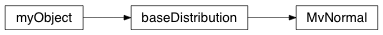

Multivariate normal distribution¶

@MvNormalDistribution Module defining a multivariate normal distribution with statistical procedures
-
class
geobipy.src.classes.statistics.MvNormalDistribution.MvNormal(mean, variance, prng=None)¶ Multivariate normal distribution
-
deepcopy()¶ Define a deepcopy routine
-
getBinEdges(nBins=100, nStd=4.0, dim=None)¶ Discretizes a range given the mean and variance of the distribution
- Parameters
nBins (int, optional) – Number of bins to return.
nStd (float, optional) – The bin edges = mean +- nStd * variance.
dim (int, optional) – Get the bins of this dimension, if None, returns bins for all dimensions.
- Returns
bins – The bin edges.
- Return type
geobipy.StatArray
-
getPdf(x)¶ Get the PDF of Normal Distribution for the values in x
-
ndim¶ Place Holder for children
-
pad(N)¶ Pads the mean and variance to the given size N: Padded size
-
probability(samples)¶ For a realization x, compute the probability
-
rng(size=1)¶
-